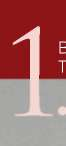

EĞİTİM ALANININ ÖZELLİKLERİ
1- Asgari; 50 metre genişliğinde 100 metre uzunluğunda, 5 metre yüksekliğinde yan koruma duvarları, 7 metre yüksekliğinde kapan yüksekliği ve gece uygulamaları için ışıklandırma sistemi olan açık alan, 2- Ders arası molalarda kursiyerlerin istirahat edebileceği açık veya kapalı alan,
3- Kursiyerlerin zaruri ihtiyaçlarını giderebileceği “Kafeterya, WC., Lavabo vb..” gibi kapalı alan,
4- Kontrol atış kulesi olmalıdır.
5- Zemin, fişeği sektirmeyecek toprak, kum veya çim olabilir.
BAŞVURU KAYNAKLARI
1- Amerika ATAP Kursu Eğitim Ders Notları
2- Rehine Kurtarma Eğitim Kursu Ders Notları 23

TIŞ TEKNİKLERİ
BÖLÜM